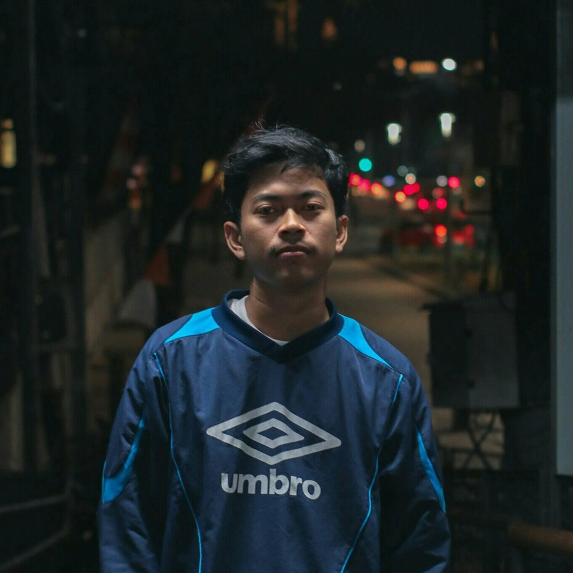

Deskripsi Singkat
Hadi Wahyudi adalah seorang mahasiswa jurusan prodi Teknologi Pendidikan, Selain mahasiswa saya juga seorang Fotografer berbasis dijakarta. Di bidang Fotografi saya menekuni bidang fotografi jurnalistik, model & fashion dan juga street photography.
